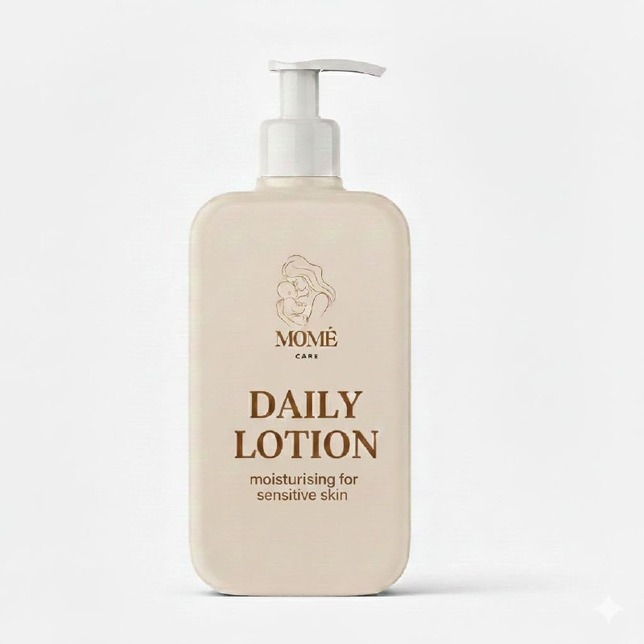
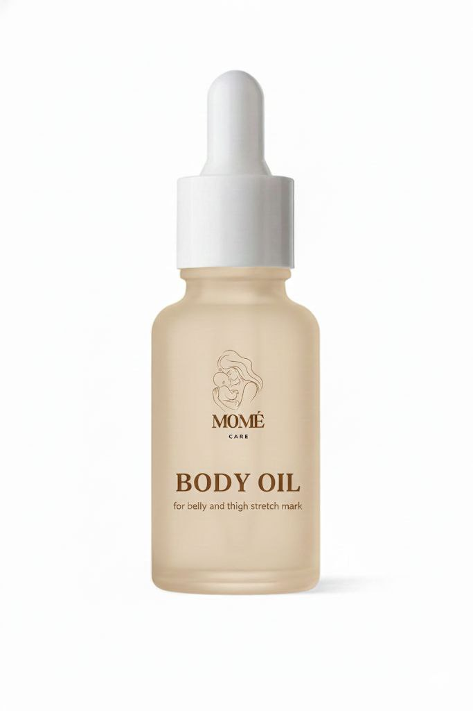
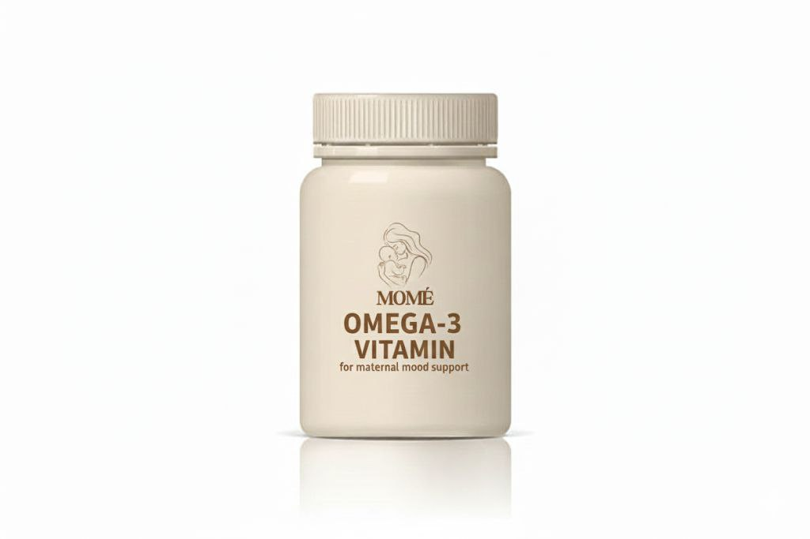

Mommies Product
Mome Care produces high-quality products specially designed for pregnant mothers, mothers in the confinement period, and women who are facing challenges in restoring their beauty and well-being after childbirth. Our products are trusted by many, as they have received approval from the Ministry of Health (KKM), ensuring confidence and credibility among mothers.
For those who may still have doubts, our brand has grown from a single product to four products today, an achievement made possible by positive testimonials from our users, proven effective over the past three years.
Every parcel we deliver is not driven solely by profit, but by our sincere commitment to helping mothers recover both physically and mentally.
You matter, mommies! 💗

DAILY LOTION
Suitable for use at any time whenever mommies feel their skin needs extra moisture. The ingredients in this lotion are specially formulated for sensitive and dry skin. Apply the lotion evenly onto the skin, then gently massage it to allow faster absorption.
Ingredients: hydrating agents (Glycerin, Shea Butter, Almond Oil), emollients (Mineral Oil, Isopropyl Palmitate), antioxidants (Vitamin E/Tocopheryl Acetate), and fragrances.
*200ml
Price: RM42.70

BODY OIL
Enriched with gentle and safe natural ingredients, this body oil is suitable for light massage to help improve blood circulation, relieve muscle aches, and provide comfort to the mother’s body. Its lightweight texture absorbs easily without leaving a greasy feel, making it suitable for daily use throughout the confinement period.
Ingredients: Coconut, Olive, Rice Bran, Tamanu (Calophyllum Tacamahaca), and Grape Seed, plus beneficial extracts (Rice Germ, Gardenia, Schisandra, Turmeric) and added Rosehip Oil, Squalane, Calendula Oil, Rosemary Oil, and Lavender for fragrance.
*30ml
Price: RM45.90

OMEGA-3 VITAMIN
Enriched with DHA and EPA, this supplement helps support brain function and general health while complementing a balanced postnatal diet. Made with high-quality fish oil and carefully processed to minimize odor and discomfort, it is gentle on the stomach and easy to consume.
Ingredients:Eicosapentaenoic Acid, Docosahexaenoic Acid, and Flavorings- sweet orange oil
*55 capsule
Price: RM40
 BATH GEL
BATH GEL
Infused with delicate rose particles, it helps cleanse the skin gently while offering a calming floral touch that enhances relaxation after a long day.
Its mild, skin-friendly formula produces a soft lather that cleanses without stripping away natural moisture, making it suitable for sensitive skin after childbirth. The presence of rose particles adds a luxurious feel, leaving the skin feeling fresh, smooth, and comforted.
Ingredients:Aqua (Water), Sodium Laureth Sulfate, Cocamidopropyl Betaine, Glycerin, Sodium Chloride, PEG-7 Glyceryl Cocoate, Rosa Damascena Flower Extract
*250ml
Price: RM25.90
 HERBS PILL
HERBS PILL
It is designed to complement a balanced postnatal routine, helping mothers feel more comfortable and supported as the body recovers naturally after childbirth. Carefully prepared with commonly used herbs in traditional postnatal care, this supplement is suitable for daily consumption during confinement. Its easy-to-take pill form makes it convenient for busy mothers while maintaining the essence of traditional wellness practices passed down through generations.
Ingredients:Pimpinella Anisum (Anise) Seed Powder, Nigella Sativa (Black Seed) Powder, Tamarindus Indica Fruit Powder, Honey Powder, Rice Flour (Oryza Sativa), Magnesium Stearate (Vegetable Source – Anti-caking Agent)
*30 capsule
Price: RM70